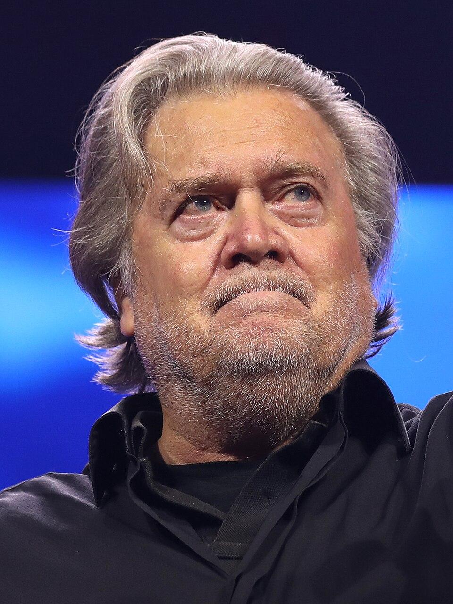

卷·23 · 盟友群像 · 第一手档案馆权力的半径
从他身边往外画一个圆：元老顾问、国会盟友、媒体与平台盟友、家族政治角色。这张名单逐年重画——进圈与出圈，都是新闻。
本馆全部人物为在世公众人物，一律只写公开记录与公开报道：官司写"检方指控/法院认定"，争议写"批评者说/他说"，双向并陈；任免与参选动态以官方宣告为准，核验基准日为 2026-10-05。与卷·15 幕僚走马灯分工：那里收在任政府职务的任免台账，这里收圈层人物——有些名字两边都有，各自负责一个切面。人物状态会变，本馆逐轮滚动。
史蒂夫·班农（Steve Bannon）——高盛出身的哈佛 MBA，布莱特巴特新闻执行主席、首席战略师，2017 年 1-8 月在任，夏洛茨维尔事件后去职（标准记载）。2020 年 8 月因"我们筑墙"众筹案被联邦起诉，2021-01 卸任前夕获总统赦免；纽约州同案另行检控，2025-02 认罪、获三年有条件释放；2026-04，最高法院为撤销其案件扫清障碍（路透社），联邦藐视国会案亦获胜——他的播客至今仍是动员网络的枢纽站。双写：支持者视他为"永不出局的操盘手"；批评者视他为围绕权力运转的职业操盘手。
鲁迪·朱利安尼（Rudy Giuliani）——纽约市市长（1994-2001），"9·11"后的"全美国市长"；2016 年后成为他的私人律师与选举诉讼前锋。后半程清单沉重：2021-04 联邦调查局搜查其住所；2023-08 在富尔顿县与特朗普同案被诉（卷·19）；因对两名佐治亚选举工作人员的诽谤被判 1.48 亿美元，2024-07 破产保护被驳回、纽约州 2024-07 吊销律师执照（华盛顿特区随后照准）；2024-12 他公开承诺停止对两位选举工作人员的舞弊指控，其后自报判决已"全部履行"。2025-11，富尔顿县新任检察官放弃追诉，法官斯科特·麦卡菲裁定全案驳回——针对他与共同被告的起诉就此终结。双写：支持者叹"市长晚节"；批评者记"从联邦检察官到被告席的完整弧线"。
罗杰·斯通（Roger Stone）——半个世纪的职业政治顾问，2016 年竞选的圈外顾问，背上纹着尼克松肖像的联盟元老（标准记载）。2019-11 因向国会作伪证、妨碍司法与证人篡改被联邦陪审团定罪（七项全部成立）；2020-07 总统为其减刑，2020-12 全面赦免——司法部监管人员罕见公开反对减刑（标准记载）。2024 年起他经营播客与政治咨询，仍在联盟的元老席上。双写：支持者称他是被"深层国家"选中的祭品；批评者称赦免令本身就是证据——两种说法都由同一支笔写下。
迈克·约翰逊（Mike Johnson）——路易斯安那州联邦众议员，2023-10-25 在三周内从无名之辈被推上众议院议长席，2025-01 连任。立法成绩单：大而美法案、爱泼斯坦档案法的终局推动（卷·07）。双写：多数党称他是把混乱多数团结起来的低音稳定器；批评者称他把议长席做成了总统的议程传递带。
玛乔丽·泰勒·格林（Marjorie Taylor Greene）——佐治亚州第 14 选区众议员（2021-2026），曾是他最响亮的国会扩音器。2025-11-21，她发布长视频宣布辞去众议员职务，2026-01-05 生效（ABC/NBC/C-SPAN）——导火索是爱泼斯坦档案公开之争，她自述"幻灭"、警告支持者不要"被 MAGA 公司抛却"。从扩音器到出走者，她的三年任期成了"忠诚的保质期"的注脚。
马特·盖茨（Matt Gaetz）——前佛州联邦众议员，2024-11 被提名司法部长、八日后自行退出（众院伦理委员会 2024-12 公布报告，认定其涉性行为不当与违法用药等——他全盘否认，检方未起诉）；此后转任 One America News 主播（标准记载）。2025-05 起被多次报道"试探"参选佛州州长，截至基准日（2026-10-05）未正式宣布。
塔克·卡尔森（Tucker Carlson）——黄金时段最高收视的福克斯主持人，2023-04 与福克斯分道，转战自有平台；2024-02 赴莫斯科采访普京，成为他独立媒体身份的定场镜头（标准记载）。双写：他的支持者称这是摆脱公司审查的独立新闻；批评者称这是候选人时代的公关卫星。
丹·邦吉诺（Dan Bongino）——特勤局出身、播客与福克斯评论员出身的第 20 任联邦调查局副局长（2025-03 就任，8 月增设"双副局长"架构），2026-01 卸任回营媒体（ABC 附属台报道）——媒体盟友进政府、再回媒体，完成了联盟流动性的一个完整闭环。
小唐纳德——竞选季的头号助选人与"MAGA 皮划艇"的舵手，2024 后仍是动员网络的一号操作员（卷·14 家族谱有档）。拉拉·特朗普——2024-03 当选共和党全国委员会共同主席，2024-12-09 以"我来做的事已经完成"宣布卸任（美联社），其后未入参院（鲁比奥旧席最终归了阿什莉·穆迪）。凯·特朗普——2007 年生，2024-07-17 大会为祖父站台的高尔夫球手与社媒创作者（卷·14/卷·50 口径）——家族第三代里第一个被推上全国讲台的人。家族角色的名单还在变长：这是王朝政治批评者的核心论据，也是家族支持者眼中"忠诚红利"的自然分配。
利兹·切尼（Liz Cheney）——共和党会议主席（党内第三号）切尼，2021-02 投下弹劾赞成票，2021-05-12 被党团投票免去领导职务（卫士报/PBS，接任者是斯特凡尼克）；她的回应是"我打算领导这场战斗"。2022-08-16 怀俄明初选，特朗普背书的哈格曼以约 37 个百分点击败这位在任众议员——现代史上最大的在任众议员落败之一（各州认证口径）。此后她成为 1·6 委员会副主席，把战场搬进听证会直播。双写：她的阵营称之为良心对决与忠诚测试的清洗；特朗普阵营称之为选民亲自做的除名手续。
亚当·金辛格（Adam Kinzinger）——同样是弹劾赞成票与 1·6 委员会（佩洛西任命的两名共和党人之一），2021-10-29 宣布不再寻求连任："更广泛的战斗就在前方"，并称特朗普主义是党内的"癌症"（Politico/NBC 记录）。双写：退选被他的支持者读作不以初选对决陪葬原则；被初选威胁读作提前认输——两种读法在伊利诺伊的 redrawn 选区地图上各自成立。
玛乔丽·泰勒·格林——第三位出圈者的方向相反：她不是被清洗的自由派批评者，而是最响亮的扩音器本人（第二节有档）。2025-11-21 因爱泼斯坦档案之争宣布出走、警告支持者"被 MAGA 公司抛却"——忠诚游戏的边界，第一次由忠诚者亲自画下。双写：她的出走被读作对档案问题的原则坚持，也被读作与领导层路线的政治切割；两个版本的格林，都登在 2025 年 11 月 21 日的新闻里。
联盟的入圈与出圈，靠三道筛子运转：背书初选——他的背书在 2022/2024 两届初选中是最强单一变量，哈格曼式换将即其产物；人事提名——第二任期的班底把媒体盟友直接任命进执法与情报系统（邦吉诺案例，第三节）；发帖点名——账号点名即立场测验，不表态即默认出圈。三道筛子的合力是：圈内的反对成本被抬高到"失去下一场初选"的量级。双写：支持者称这是把问责权交还给选民；批评者称这是初选武器化后的组织清洗。切尼、金辛格与格林——两个方向、三份档案——是这套机制迄今最完整的公开展品。
在任幕僚的任免台账在卷·15 幕僚走马灯；被起诉岁月的叙事在卷·19 法庭全记与卷·05；MAGA、Bank the Vote 等联盟词汇在卷·22 语汇词典；盟友的对手们（与决裂者）的另一半名单，见卷·16与本馆增厚轮。
把本馆十一人的状态排成一行：三人官司各有终局或转折，一人离任出走，一人状态待宣，一人进出政府再回媒体，三人常驻。半径没有变小，只是换了组成——出圈的空位，总有新名字顶上。双写：他的支持者把这叫忠诚的自由市场，愿者上钩；批评者把这叫人格化的权力结构。本馆只负责把每次进出记档。
本馆收录 11 位圈层人物 × 4 个分组，全部依据公开记录与公开报道；人物状态截至 2026-10-05，变动随轮滚动。人物馆与叙事页的区别：叙事页写故事，人物馆写档案——每人最末一笔都注明了出处档级，人还在动，档案逐轮追。在世人物，本馆笔下只有动词的归属，没有形容词的判决。
下期预告 · 第一手档案馆·卷·23《盟友群像》增厚：决裂者对写（切尼、金辛格与格林的出走）与忠诚度筛选机制——半径的另一半。